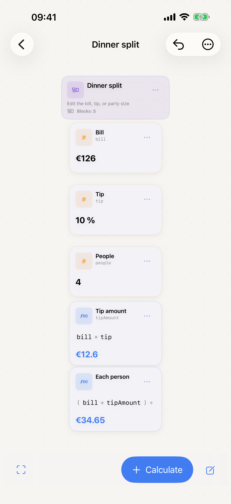
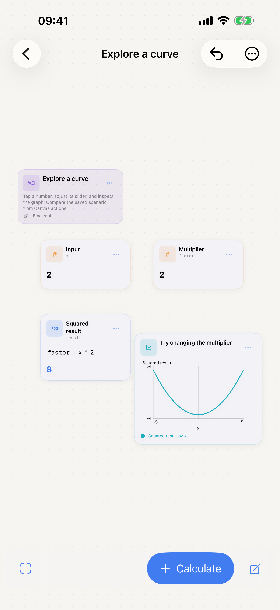
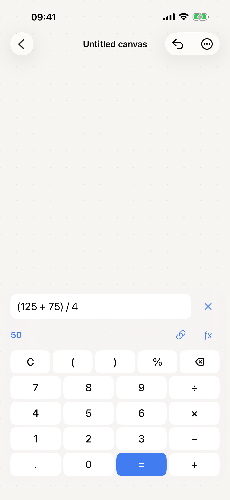

A visual calculator for iPhone and iPad
Change a number.
See the whole picture.
Put your calculations on a canvas. Link the results, adjust an assumption, and watch connected answers update.
Free. Works offline. No account required.
Keep the connection.
Reuse values in new calculations. Give them names, work with units, and see where an answer comes from.
Explore the what-ifs.
Adjust inputs with sliders, plot curves, and save scenarios to compare with your original numbers.
Make it yours.
Start with a recipe, bill split, trip budget, paint estimate, or graph. Organize your canvas and export your work.



Your work stays with you.
Canvases save locally on your device. Share an editable CalcCanvas file to move your work, or export a PDF, image, or text report. There are no ads, tracking, or analytics in the app.